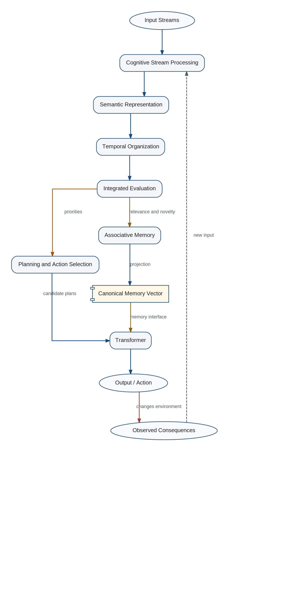

1.1 Purpose
This document develops an engineering architecture for long-lived cognitive systems capable of accumulating experience, reorganizing knowledge, preserving continuity, and improving throughout an operational lifetime measured in years or decades.
The immediate objective is not to claim a finished general intelligence architecture. The objective is to identify the next implementable architectural changes that provide the greatest increase in practical utility for foreseeable engineering cost while increasing the number of useful future development paths.
The project therefore treats existing neural models, classical programs, storage systems, version-control systems, and document generators as reusable components. Novel work is concentrated on their organization, interfaces, persistent state, and long-term evolution.
1.2 Architecture Before Component Complexity
Many improvements in current systems are obtained by increasing model scale or adding specialized components. This project instead examines whether a different organization of existing components can create a larger gain than making any one component more complex.

The strategy is evolutionary. Each stage must be fully operational, independently useful, measurable, and capable of supplying evidence for the next stage. Tighter integration is deferred until the modular implementation has generated enough operational data to justify it.
Existing Components ↓ Improved Organization ↓ Operational Evidence ↓ Deeper Integration
1.3 Scope
The project models computational and architectural mechanisms: memory, knowledge organization, evaluation, communication, continuous learning, architectural search, identity continuity, and allocation of work between neural and algorithmic computation.
Social, psychological, emotional, ethical, and political phenomena are not independently engineered in the current stage. The working hypothesis is that a substantial subset of these phenomena will emerge from sufficiently mature cognitive architecture. This is a hypothesis, not an established fact.
Subjective consciousness is not required by the functional architecture described here. A system may possess continuity, goals, and a persistent self-model without any proven subjective experience.
1.4 Epistemic Status
The document separates implemented mechanisms, architectural decisions, working hypotheses, observations, and open questions. Confidence values are engineering estimates, not statistical posterior probabilities unless an experiment explicitly establishes that interpretation.
Biological evolution is treated as a very large empirical search that produced robust cognitive architectures under severe real-world constraints. Evolutionary persistence makes a mechanism a strong candidate for study, but does not prove that the mechanism is optimal for an engineered system with different resources and objectives.
A good project model must remain corrigible. New evidence may refine definitions, change confidence, replace architecture decisions, or create new Tokens. Existing Tokens do not change semantic identity; semantic replacement requires a new Token.